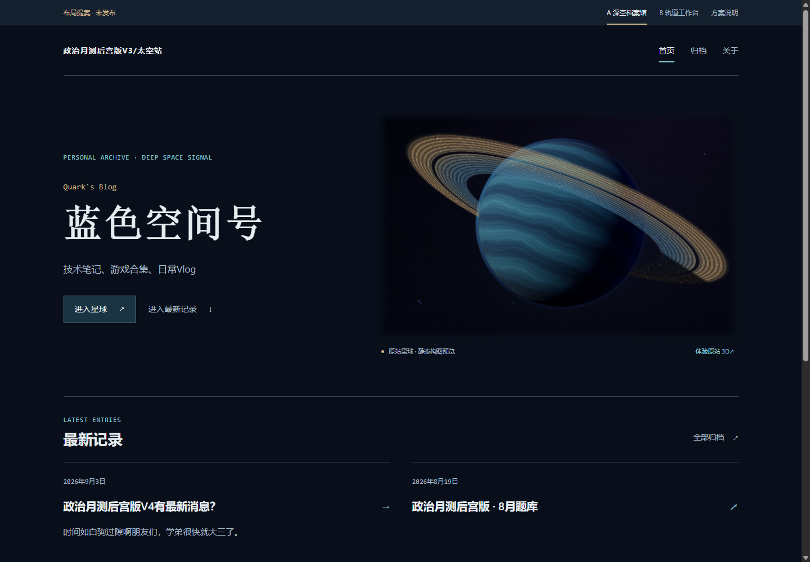
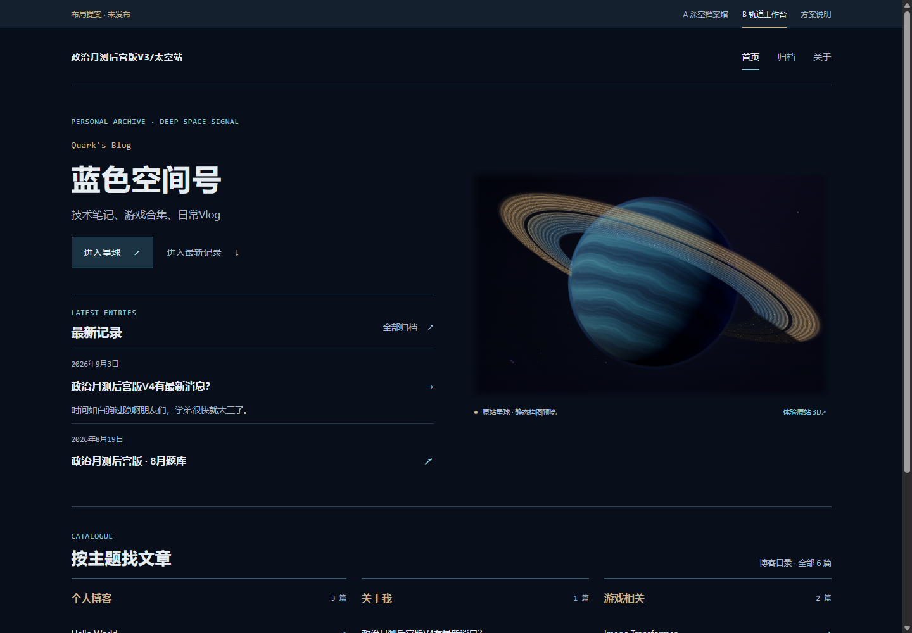

A推荐方向
深空档案馆
先看星球，再进入最近记录和主题目录。保留更完整的深空氛围。

浏览 A 方案蓝色空间号 · 布局探索
两种首页结构，一套阅读体验。先比较，再决定。
先看星球，再进入最近记录和主题目录。保留更完整的深空氛围。

浏览 A 方案近期文章与星球并排。常回来找内容更直接，首屏的信息密度也更高。

浏览 B 方案推荐方向 A · 内页
建议先用当前窗口比较 A / B，再把窗口缩到手机宽度。两套首页可在顶栏随时切换。
我倾向 A：星球依然占据视觉中心，下方按“最近”与“主题”分工。若你最看重快速查找，B 会更适合。
原型使用完整真实内容和原站星球静帧；进入星球会打开原站。此处没有验证新的 3D 或衔接动画。外部文章和游戏保留原目的地。
同尺寸前后对比 查看结论与验证记录